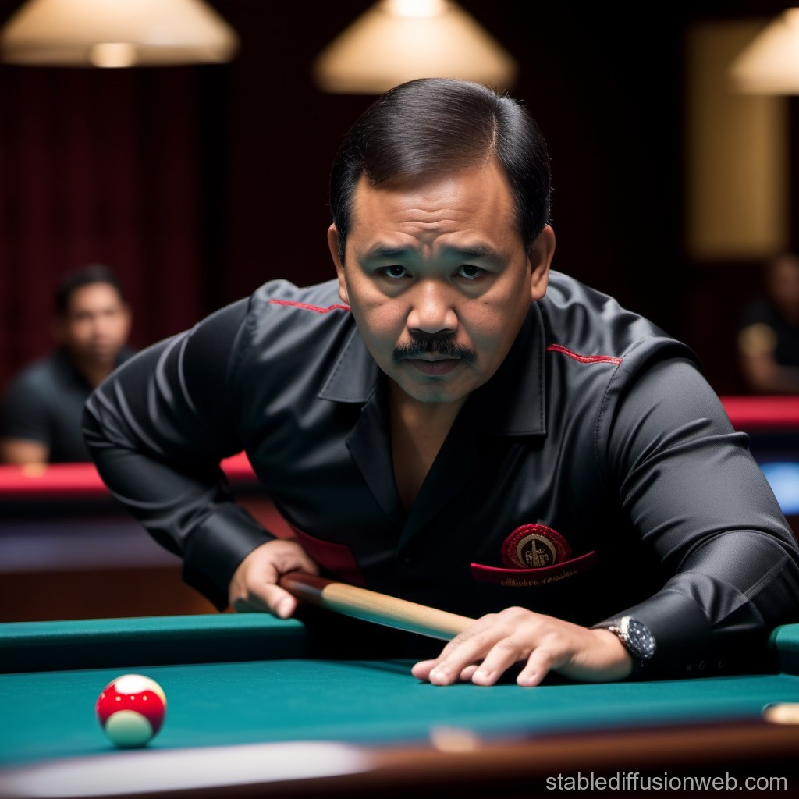

BILLIARDS
1. Number of Players
Billiards can be played by two players in singles or by two teams of two players each in doubles. Some formats, like straight pool or snooker, involve multiple players in tournaments but one-on-one matches are standard.
2. Strategy of the Game
- Position Play: Players aim to leave the cue ball in advantageous positions for subsequent shots.
- Control: Controlling cue ball speed and direction is critical for maintaining a break or series of shots.
- Safety Shots: Playing defensively to make it hard for the opponent to score.
- Pattern Recognition: Planning several shots ahead based on ball positions.
3. Is Billiards a team game?
Billiards is generally played as an individual sport but has team-based formats in competitions like the World Cup of Pool or regional championships.
4. Rules of the Game
The rules vary depending on the billiard variant. Some popular formats include:
- Carom Billiards: Played on a table without pockets. The objective is to score points by caroming (bouncing) the cue ball off both object balls.
- Snooker: Played on a large table with 15 red balls, 6 colored balls, and a cue ball. Players aim to score by potting balls in a specific order.
- Pool (8-Ball/9-Ball): Played on a pocketed table with either 15 balls (8-ball) or 9 balls (9-ball). The objective is to sink balls in a specific sequence or category.
- Fouls: Penalties for failing to hit a ball correctly or committing illegal shots.
5. Important Facts about Billiards
- Origins: Billiards evolved from outdoor lawn games in the 15th century in Europe. The modern form began in France.
- Major Tournaments:
- World Snooker Championship (annual event since 1927).
- US Open Pool Championship (prestigious pool event).
- Mosconi Cup (Europe vs. USA in 9-ball pool).
- World Cup of Pool.
- Governing Bodies:
- World Pool-Billiard Association (WPA).
- International Billiards and Snooker Federation (IBSF).
6. Records and Statistics
- Most World Snooker Titles: Joe Davis (15 titles).
- 147 Breaks in Snooker: Maximum possible score; achieved by players like Ronnie O'Sullivan.
- Youngest Snooker World Champion: Stephen Hendry (21 years old).
- Longest Snooker Match: 14 hours and 50 minutes between Cliff Thorburn and Terry Griffiths (1983).
7. Countries Playing Billiards
Billiards is popular worldwide, particularly in:
- England (birthplace of modern snooker).
- USA (known for pool).
- China (strong presence in snooker).
- Philippines (dominant in pool).
- India (strong tradition in carom billiards).
- Germany, Australia, Canada, and the Middle East also have vibrant billiards communities.
World's Famous Chess Players

Ronnie O'Sullivan

Efren Reyes

Steve Davis

Allison Fisher

Jeanette Lee